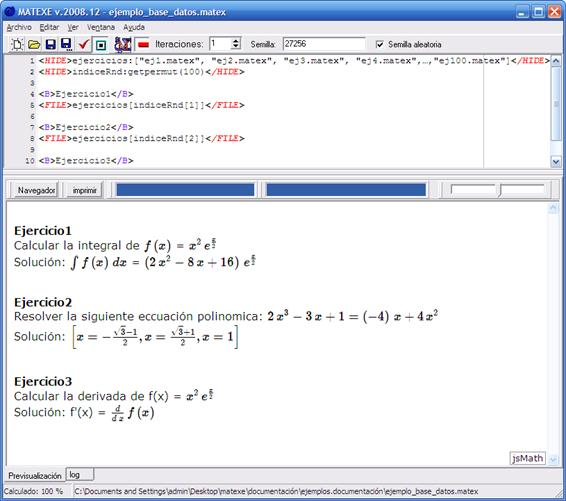

En ocasiones puede ser interesante diseñar documentos que incluyan ejercicios extraídos de una base de datos de forma aleatoria. Para ello es necesario disponer en un directorio de un conjunto de archivos .matex de modo que cada archivo incluya un único ejercicio y su solución.
Supongamos que en el directorio se encuentran los archivos ej1.matex, ej2.matex, ej3.matex,
ej4.matex, …., ej100.matex y que cada uno de los cien archivos contiene un único ejercicio.
Con siguiente documento se generará un boletín formado por diez ejercicios extraídos del directorio anterior al azar.

Created with the Personal Edition of HelpNDoc: Free HTML Help documentation generator